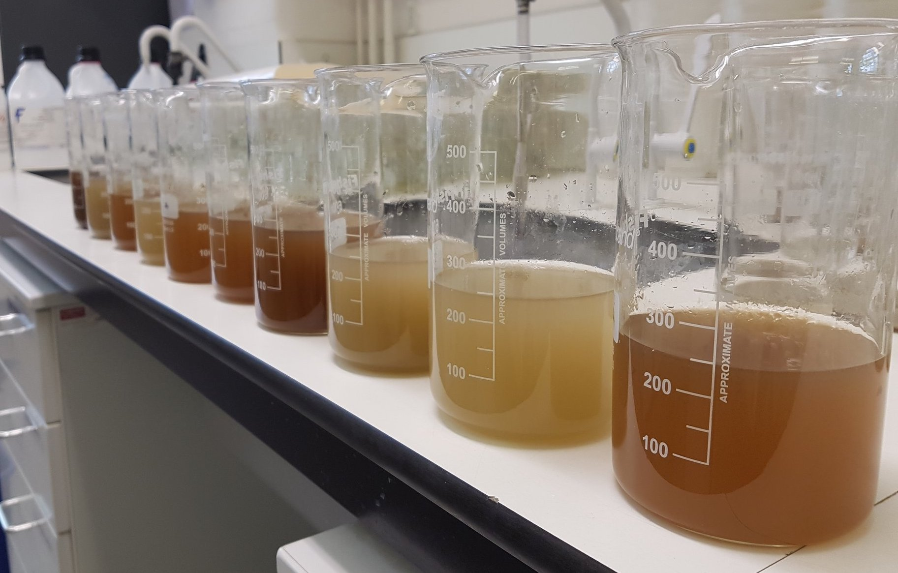
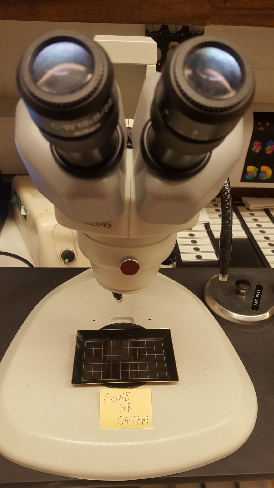
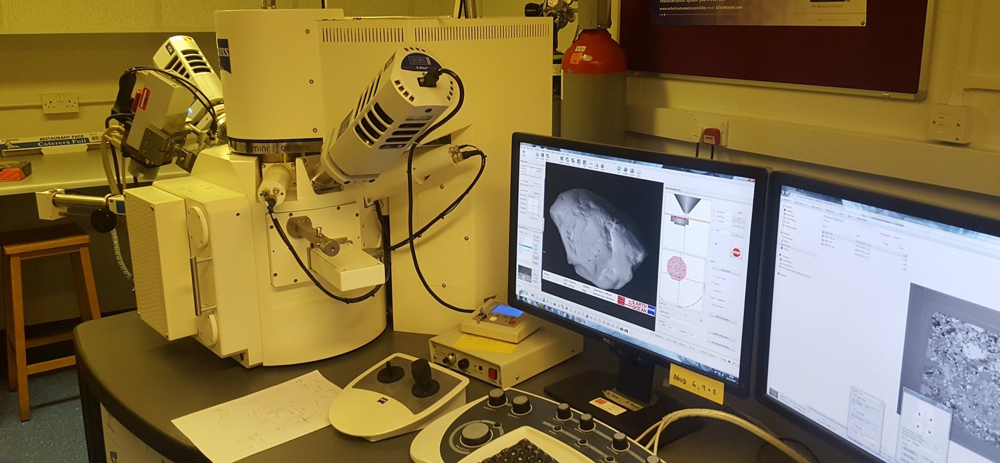
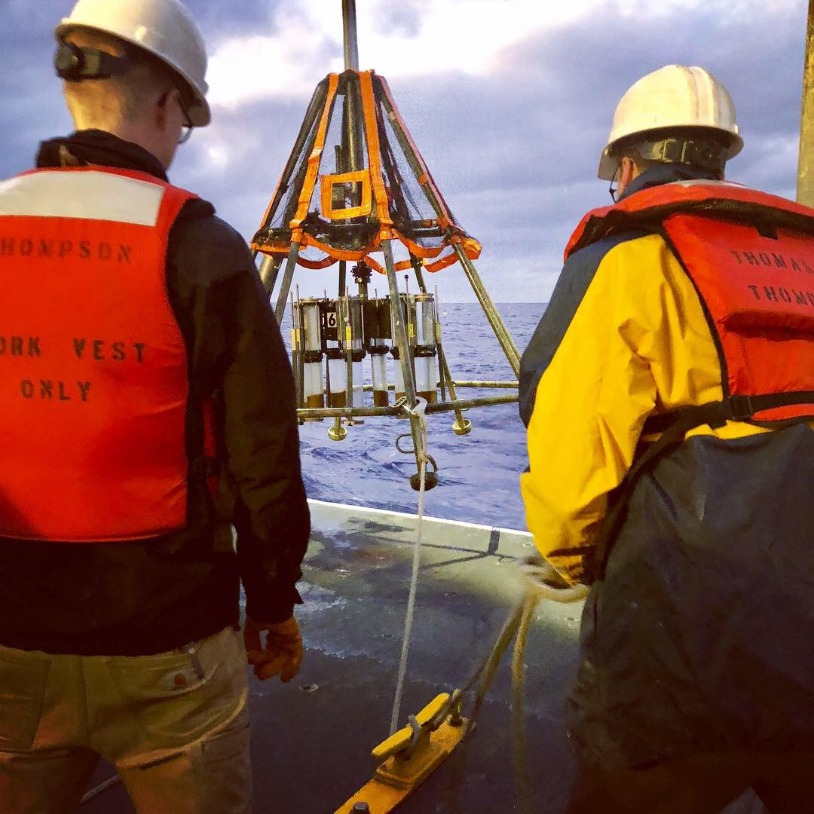
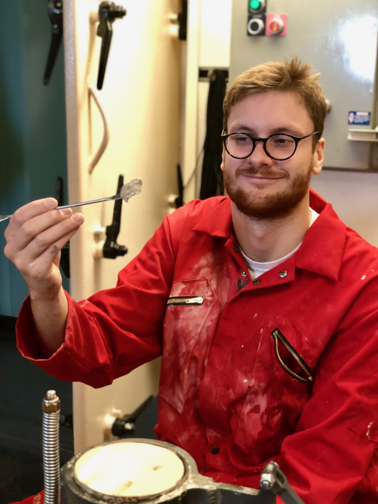
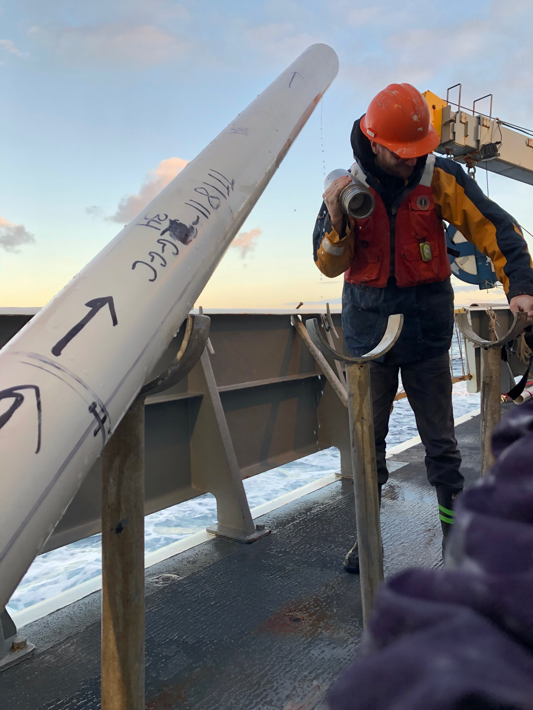

Identification and picking of Neogene Foraminifera (planktic and benthic)[P. Wilson's Lab]
Stable isotope analysis of calcite (Thermo MAT 253 [Kiel IV]) [I.R. Hall's lab]
Some experience measuring He isotopes in marine sediment samples [G. Winckler's lab]
Identification and counting of ice-rafted Debris, pyrite, and other sand-sized entities in marine sediment (light microscope and SEM) [I.R. Hall's lab]
  
Ship:
'Physical Properties' (Multi-Sensor-Core-Logging of sediment cores)
Prepping and deploying Gravity Cores, Piston Cores, Multi-Cores, CTDs
Shipboard scientist on the CROCCA-2s expedition (Oct-Dec 2018) and the ACCLIMATE-2 expedition (Feb-Mar 2020)
  
Office:
Chronostratigraphy: Constructing age-depth models for sediment cores by a variety of approaches, classical and novel
MATLAB: >7 Years experience using Matlab for data analysis, statistics, visualisation
Python: Data analysis and visualisation with python (Jupyter, NumPy, Pandas, Xarray, Seaborn, Matplotlib, etc...)
Time Series Analysis: Analysing regularly- and irregularly-spaced data in the frequency domain (Blackman-Tukey, Lomb-Scargle, SSA, Wavelet Analysis, Multi-Taper Method, ARIMA modelling, etc.)
Novel numerical approaches to explore paleoclimate datasets
Complex Data Visualisation
Ocean Data View for visualising oceanographic data